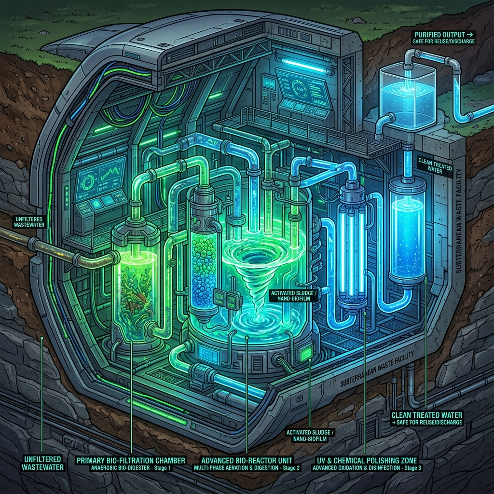

Nuestra división de Ingeniería Séptica Avanzada diseña, despliega y mantiene sistemas de manejo de efluentes fuera de la red (off-grid), utilizando biotecnología moderna y campos de lixiviación diseñados mediante análisis de permeabilidad de suelos. Este servicio es vital para fincas, viñedos y propiedades remotas.
En lugar de instalar fosas sépticas convencionales que fallan catastróficamente por saturación, implementamos Sistemas de Tratamiento Aeróbico (ATU) que procesan el agua a un nivel de pureza casi apto para riego superficial, protegiendo los mantos acuíferos subterráneos (EPA / CSLB compliant).